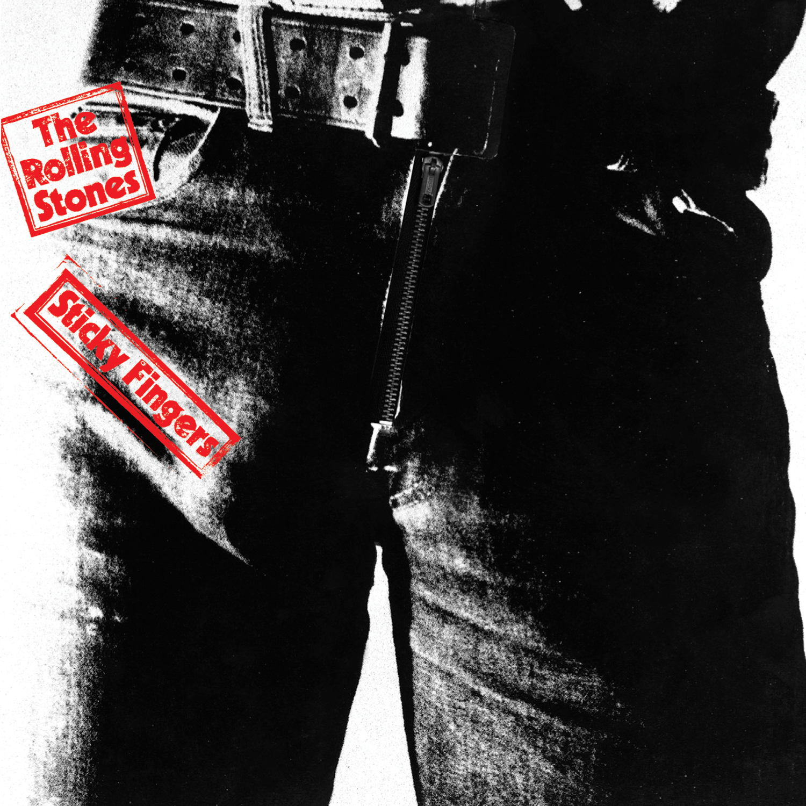

The Rolling Stones ◆ Wild Horses ◆ Sticky Fingers ◆ 1971
<2021-06-13 Sun> 刚开始写余日摇滚的时候没想太多，打算每首喜欢的歌都来一篇，每天随便挑一首写。这首歌就是随便挑的。真要说的话 Sticky Fingers 里十首歌我每首都大爱，轮到这首完全是随机。
Childhood living is easy to do.
The things you wanted
I bought them for you.
Graceless lady
you know how I am
you know I can't let you
slide through my hands.
Wild horses
couldn't drag me away.
Wild, wild horses
couldn't drag me away.
I watched you suffer
a dull aching pain.
Now you decided to
show me the same.
But no sweeping exits or offstage lines
could make me feel bitter or treat you unkind.
Wild Horses
couldn't drag me away.
Wild, wild horses
couldn't drag me away.
I know I've dreamed you a sin and a lie
I have my freedom but I don't have much time
Faith has been broken tears must be cried
Let's do some living after we die
Wild Horses
couldn't drag me away.
Wild, wild horses
couldn't drag me away.
Wild Horses
couldn't drag me away.
Wild, wild horses
we'll ride them some day